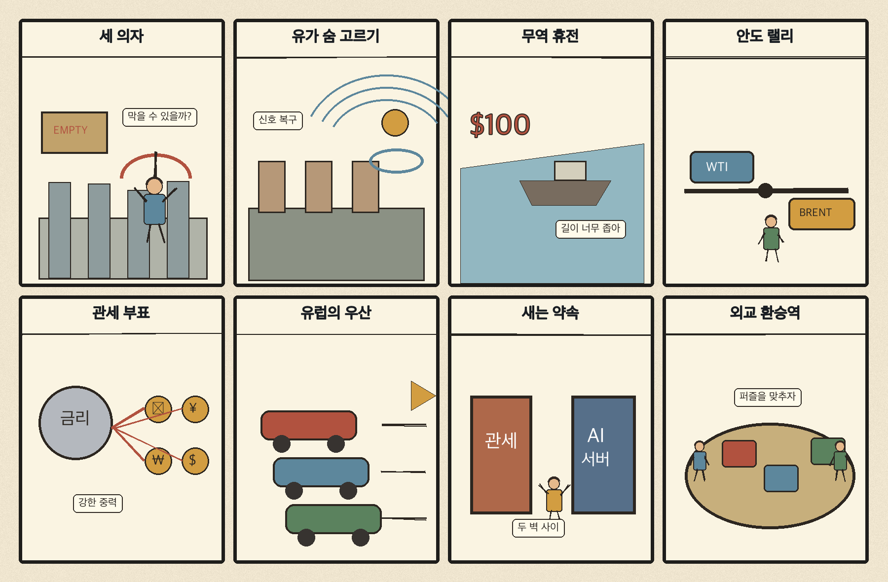
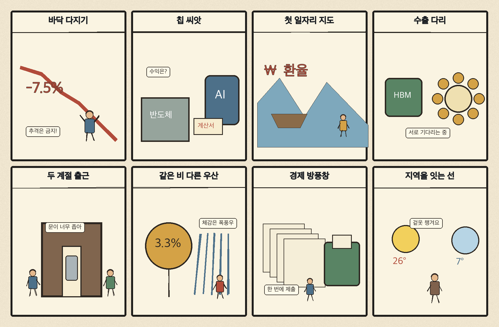

01
로켓랩 · 54.31→58.86달러 · +8.39%
내용요약 시가 대비 +8.39%로 조사군 최상위 상승을 기록했습니다.
예상여파 우주 성장주의 위험선호 회복을 보여주지만 급등 뒤 갭 변동성은 커질 수 있습니다.
MORNING_BRIEFING_20261110
작성 시각: 2026-11-10 06:36 KST · 직전 미국 정규장과 2026-11-10 KST 당일 공개 기사 기준
11월 9일 뉴욕증시는 다우 +2.15%, S&P 500 +2.35%, 나스닥 +2.74%로 일제히 급반등했습니다. AMD·반도체 장비·우주 성장주가 강했지만 엔비디아 약세 보도가 함께 나와 AI 공급망 내부의 차별화는 이어졌습니다. 한국 시장은 11월 9일 KOSPI -0.81%, KOSDAQ -0.82%로 낙폭을 줄였고, 오늘은 미국발 위험선호가 외국인 현·선물 수급으로 연결되는지가 핵심입니다.
| 지수 | 종가 | 등락률 | 한국 증시 시사점 |
|---|---|---|---|
| 다우존스 | 52,389.75 | +2.15% | 경기·금융주까지 위험선호 확산 |
| S&P 500 | 7,549.94 | +2.35% | 성장주 반등과 국내 투자심리 개선 |
| 나스닥 종합 | 25,253.14 | +2.74% | 성장주 반등과 국내 투자심리 개선 |
미국 3대 지수가 동반 급반등해 국내 성장주 투자심리에 우호적입니다.
급락 뒤 낙폭은 줄었지만 5,000선 안착과 외국인 수급 확인이 필요합니다.
AMD·장비주는 급등했지만 모든 AI 종목이 함께 오른 장은 아니었습니다.
이란 긴장 완화 신호는 물가 부담을 낮추지만 에너지주는 상대 약세 가능성이 있습니다.
11월 9일 보고서는 고변동성 국면에서 수급·컨센서스·30건 이상 유사 조건 표본을 모두 확보하지 못해 공식 추천을 내지 않았습니다. 사후에 종목을 추가하지 않습니다.
| 시장 | 종가 | 등락률 | 기준 |
|---|---|---|---|
| KOSPI | 5,018.85 | -0.81% | 11월 9일 · 시가 대비 -0.30% |
| KOSDAQ | 638.97 | -0.82% | 11월 9일 · 시가 대비 +0.02% |
| 다우존스 | 52,389.75 | +2.15% | 미국 11월 9일 정규장 |
| S&P 500 | 7,549.94 | +2.35% | 미국 11월 9일 정규장 |
| 나스닥 종합 | 25,253.14 | +2.74% | 미국 11월 9일 정규장 |
어플라이드머티리얼즈 +8.00%, 마벨 +7.55%, AMD +7.43%였습니다.
로켓랩 +8.39%, 앱러빈 +5.75%로 위험선호가 확산했습니다.
보잉 -2.82%, 액센추어 -2.17%로 조사군 하위였습니다.
알리바바 -1.95%, 알파벳 -1.42%, 아마존 -0.89%로 상대 부진했습니다.
내용요약 시가 대비 +8.39%로 조사군 최상위 상승을 기록했습니다.
예상여파 우주 성장주의 위험선호 회복을 보여주지만 급등 뒤 갭 변동성은 커질 수 있습니다.
내용요약 시가 대비 +8.00%로 반도체 장비주 강세를 주도했습니다.
예상여파 AI 설비투자 기대가 장비 공급망으로 확산하는지 후속 거래량 확인이 필요합니다.
내용요약 시가 대비 +7.43%로 급등하며 AI칩 내 차별화를 보였습니다.
예상여파 가속기 경쟁 기대는 국내 반도체 심리에 우호적이나 선두주 약세와 함께 봐야 합니다.
내용요약 시가 대비 -2.82%로 조사군 최하위였습니다.
예상여파 지수 급등 중에도 항공주는 상대 약세를 보여 업종별 순환이 고르지 않았습니다.
내용요약 시가 대비 -2.17%로 하락했습니다.
예상여파 IT 서비스주는 AI 인프라 하드웨어 랠리와 달리 실적 가시성에 더 민감하게 반응했습니다.
미국 3대 지수의 2%대 급반등과 국제유가 하락은 국내 위험선호 회복에 우호적입니다. 특히 AMD와 반도체 장비주 강세는 국내 반도체의 낙폭 회복 가능성을 높입니다. 다만 KOSPI가 최근 급락 뒤 5,000선 부근에 있고 엔비디아 약세 보도까지 겹친 만큼, 장 초반 갭 상승 자체보다 외국인 현·선물 순매수 지속과 전일 저점 유지가 더 중요합니다.
오늘은 추천 없음 — 현금 관망
미국발 반등 신호는 강하지만 국내 개별 종목의 전일까지 외국인·기관 수급, 컨센서스 변화, 30건 이상 유사 조건 표본을 함께 확보해 종합점수 75점·상승확률 60%·예상 손익비 1.5를 모두 검증한 종목이 없습니다. 장전 호재만으로 확률과 점수를 만들지 않습니다.
관심 연결종목 반도체 장비·전력반도체·반도체 소재는 관찰 대상일 뿐 매수 추천이 아닙니다. 장 초반 과도한 갭 상승 종목은 추격매수를 금지합니다.
미국 급등이 국내 순매수 전환으로 이어지는지 확인합니다.
KOSPI가 전일 저점 4,990.66을 지키고 5,000선 위에서 거래되는지 봅니다.
AMD·장비주 강세와 엔비디아 약세가 국내 종목별로 어떻게 반영되는지 살핍니다.
유가 급락과 원화 강세가 운송·화학·에너지 업종에 미치는 상대 효과를 점검합니다.
핵심 요약: AI 투자 초점이 연산칩에서 전력변환·전력망 접속으로 넓어지는 가운데, 뉴욕 시장에서는 AMD와 장비주가 강하고 엔비디아는 약세를 보이는 차별화가 나타났습니다. 대형 AI 스타트업 상장과 선행 투자 경쟁도 이어지고 있습니다.
내용요약 전력반도체 기업이 전력망부터 AI 서버 코어까지 차세대 인프라용 전력 솔루션 전략을 제시했다는 보도입니다.
예상여파 AI 설비투자의 병목이 연산칩뿐 아니라 전력변환·배전 효율로 넓어지며 관련 부품 경쟁이 치열해질 수 있습니다.
내용요약 일본 AI 스타트업 사카나AI가 2027년 미국·일본 초대형 상장을 추진한다는 보도입니다.
예상여파 대형 상장이 현실화되면 아시아 생성형 AI 생태계의 자금조달 기준과 인재 경쟁이 달라질 수 있습니다.
내용요약 뉴욕 증시에서 엔비디아가 약세를 보인 반면 AMD와 브로드컴이 급등하며 AI 반도체 내부의 차별화가 커졌다는 보도입니다.
예상여파 AI 투자 수혜가 단일 선두주보다 가속기·네트워크 공급망 전반으로 분산될지 확인할 필요가 있습니다.
내용요약 제품과 매출이 없는 AI 스타트업 SSI에 엔비디아가 대규모 투자를 택한 배경을 다룬 기사입니다.
예상여파 장기 연구 역량과 핵심 인재에 대한 선투자가 확대되며 AI 기업 가치평가의 불확실성도 함께 커질 수 있습니다.
내용요약 노르웨이 전력망 운영사가 새 규정 마련 전까지 데이터센터의 계통 용량 예약을 중단했다는 보도입니다.
예상여파 전력망 접속 규칙이 AI 데이터센터 입지와 가동 시점을 결정하는 핵심 제약으로 부상할 수 있습니다.
핵심 요약: 우크라이나 협상 틀을 둘러싼 주도권 경쟁이 이어지는 가운데 미국의 이란 추가 공격 자제 신호로 유가가 급락했습니다. 미·중 무역 휴전 연장과 글로벌 위험자산 반등은 단기 안도 요인이지만 기후투자 격차는 장기 과제로 남습니다.
내용요약 러시아가 미국·러시아·우크라이나 3자회담 가능성을 거론하면서도 유럽의 참여에는 선을 그었다는 보도입니다.
예상여파 협상 틀을 둘러싼 주도권 경쟁이 휴전 전망과 유럽 안보정책의 불확실성을 키울 수 있습니다.
내용요약 미국이 이란에 대한 추가 공격을 자제할 수 있다는 신호에 국제유가가 급락했다는 보도입니다.
예상여파 에너지 가격 하락은 물가 부담을 낮추지만 산유국 재정과 에너지 기업 실적에는 압력이 될 수 있습니다.
내용요약 미국과 중국이 관세·제재 유예를 내년 1월까지 연장하며 무역 휴전을 이어갔다는 보도입니다.
예상여파 단기 공급망 불확실성은 낮아지지만 유예 종료 전 협상 결과에 따라 변동성이 재차 커질 수 있습니다.
내용요약 뉴욕 증시 급반등과 국제유가 급락이 동시에 나타나며 글로벌 금융시장이 안도 국면에 들어섰다는 보도입니다.
예상여파 위험선호 회복은 아시아 증시에 우호적이나 기술주 내부 차별화와 지정학 재료의 지속성을 살펴야 합니다.
내용요약 메탄 감축 약속에 비해 실제 투자가 부족해 COP31 이행 논의가 중요해졌다는 보도입니다.
예상여파 규제와 투자 간 격차가 커지면 에너지·농업 부문의 전환 비용과 탄소 가격 불확실성이 커질 수 있습니다.

핵심 요약: 미국 증시 급등과 환율 하락이 국내 증시 반등 여건을 만들고 있습니다. 반도체 소재 연구개발 투자, 청년 고용 지원, 중국 시장 수출 상담이 산업·고용 측면의 주요 흐름이며, 출근길 영하권 추위와 큰 일교차에도 대비해야 합니다.
내용요약 미국 증시 급등과 환율 하락을 바탕으로 국내 증시의 강세 출발 가능성을 점검한 장전 전망입니다.
예상여파 최근 급락 뒤 반등 여건은 좋아졌지만 장 초반 갭과 외국인 수급을 확인하지 않은 추격매수는 위험할 수 있습니다.
내용요약 서울시가 독일 헨켈의 반도체 소재 연구개발센터를 유치하고 2031년까지 투자를 진행한다는 보도입니다.
예상여파 첨단 소재 연구와 국내 고객사 협업이 늘어나면 반도체 공급망의 기술 내재화에 도움이 될 수 있습니다.
내용요약 정부가 멘토링부터 재직 후 성장까지 이어지는 청년 취업 우수사례를 소개했다는 보도입니다.
예상여파 일자리 연결을 넘어 고용 유지와 경력 형성을 지원하는 정책의 실제 성과가 중요해질 수 있습니다.
내용요약 선전 한인경제무역박람회에서 한국 기업 186곳이 대규모 수출 상담을 진행했다는 보도입니다.
예상여파 중국 내 판로 다변화와 계약 전환율이 중소 수출기업의 실적 개선 여부를 좌우할 수 있습니다.
내용요약 서울 아침 기온이 0도 안팎으로 내려가고 내륙 곳곳이 영하권에 드는 큰 일교차가 예보됐습니다.
예상여파 출근길 안전과 건강관리 부담이 커지고 농축산물 냉해 및 에너지 수요에도 영향을 줄 수 있습니다.
